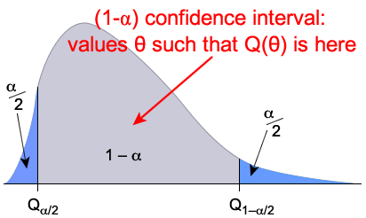

The term statistical inference refers to
techniques for obtaining information about a statistical model's parameters based on data from the model. There are two different but related
types of question about the parameter (or parameters) that we might ask.
What parameter values would be consistent with the sample data?
This branch of inference is called estimation and its main
tool is a confidence interval.
Are the sample data consistent with some statement about the parameters?
This branch of inference is called hypothesis testing and
is the focus of this chapter.
Uncertainty and strength of evidence
A distribution's parameter cannot
be determined exactly from a single random sample — there is
a 5% chance that a 95% confidence interval will not include the
true parameter value.
In a similar way, a single random sample can rarely provide enough information
about a parameter to allow us to be sure whether or not any statement
about it will be true. The best we can hope for is an indication
of the strength of the evidence against the statement.
11.1.2 Null and alternative hypotheses
All types of hypothesis test conform to the same framework.
Data and model
Hypothesis tests are based on data that are collected by some random mechanism. We can usually specify some characteristics of this random mechanism — a model for the data.
In this e-book, we assume that the data are a random sample from some distribution and may even be able to argue that this distribution belongs to a specific family such as a Poisson distribution. We concentrate on some specific characteristic of this family of distributions — a parameter of the distribution whose value is unknown.
Null and alternative hypotheses
In hypothesis testing, we want to compare two statements about an unknown parameter in the model.
The null hypothesis is the more restrictive of the two hypotheses and often specifies a single value for the unknown parameter such as \(\alpha = 0\). It is a 'default' value that can be accepted as holding if there is no evidence against it. A researcher often collects data with the express hope of disproving the null hypothesis.
If the null hypothesis is not true, we say that the alternative hypothesis holds. (You can understand most of hypothesis testing without paying much attention
to the alternative hypothesis however!)
Either the null hypothesis or the alternative hypothesis must be true.
Simplifying the null hypothesis
In some situations, both the null and alternative hypotheses cover ranges of values for the parameter. To simplify the analysis, we do the test as though the null hypothesis specified the single value closest to the alternative hypothesis range.
Alternative hypothesis, HA: \(\lambda \gt \diagfrac {\small 1} {\small 110}\)
11.1.3 Test statistic
A hypothesis test is based on a quantity called a test statistic that is a function of the data. Because it is found from random data, it can also be treated as a random variable with a distribution. The test statistic should have the following properties.
The values of the test statistic should help to distinguish between the null and alternative hypotheses.
When the null hypothesis is true, the test statistic should have a distribution that does not involve any unknown parameters (such as a standard normal distribution).
Binomial example
In a situation where we are interested in the probability of success, \(\pi\), our data might be the successes and failures in \(n = 90\) independent trials. To test the hypotheses,
Alternative hypothesis, HA: \(\pi \gt \diagfrac {\small 1} {\small 3}\)
The number of successes, \(X\), might be used as a test statistics since
Larger values of \(X\) (i.e. more successes) would be expected when the alternative hypothesis is true than when the null hypothesis is true.
If the null hypothesis is true, \(X \sim \BinomDistn(90, \diagfrac {\small 1} {\small 3})\) and this distribution does not involve unknown parameters.
11.1.4 P-value and its interpretation
The null and alternative hypotheses are treated differently in statistical hypothesis testing. We compare them by asking ...
Are the data consistent with the null hypothesis?
A hypothesis test is based on a p-value — the probability of getting a value of the test statistic as "extreme" as the one calculated from the actual data set, assuming that the null hypothesis holds.
Definition
For a hypothesis test using a test statistic \(T\), if the values of \(T\) that favour the alternative hypothesis more than the observed value of the test statistic, \(t\), are the set \(A\), the p-value for the test is the probability of such a value when the null hypothesis holds,
\[
\text{p-value} \;\;=\;\; P(T \in A \mid H_0)
\]
For example, if large values of the test statistic, \(T\), would favour the alternative hypothesis and it is evaluated to be \(t\) from the recorded data, the p-value is
\[
\text{p-value} \;\;=\;\; P(T \ge t \mid H_0)
\]
Since we know the distribution of the test statistic when the null hypothesis holds, the p-value can always be evaluated.
Interpretation
A small p-value means that our data would have been unlikely if the null hypothesis was true. This gives evidence that the data are not consistent with the null hypothesis. The following table may be regarded as an oversimplification, but can be used as a guide to interpreting p-values.
p-value
Interpretation
over 0.1
no evidence that the null hypothesis does not hold
between 0.05 and 0.1
very weak evidence that the null hypothesis does not hold
between 0.01 and 0.05
moderately strong evidence that the null hypothesis does not hold
under 0.01
strong evidence that the null hypothesis does not hold
Binomial example
If \(X\) is the number of successes in \(n = 90\) independent binomial trials, \(X \sim \BinomDistn(n=90, \pi)\). We might want to test
Alternative hypothesis, HA: \(\pi \gt \diagfrac {\small 1} {\small 3}\)
If \(x = 36\) successes were recorded, the p-value is the probability of 36 or more successes from a \(\BinomDistn(n=90, \diagfrac {\small 1} {\small 3})\) distribution.
There would be an 11% chance of getting 36 successes when \(\pi\) was \(\diagfrac {\small 1} {\small 3}\) so the data would not be particularly unusual if H0 was true. We would therefore conclude that the data are consistent with the null hypothesis and there is no evidence suggesting that the alternative hypothesis is really true.
11.1.5 Two-tailed tests
One- and two-tailed tests
In some situations, the alternative hypothesis only allows for probabilities on one side of the null hypothesis value, such as
Alternative hypothesis, HA: \(\pi \gt \diagfrac {\small 1} {\small 3}\)
This is called a one-tailed test. However the alternative hypothesis often allows for parameter values on either side of the null hypothesis value — called a two-tailed test. An example would be
Alternative hypothesis, HA: \(\pi \ne \diagfrac {\small 1} {\small 3}\)
P-value for two-tailed test
A two-tailed test is usually based on the same test statistic that would be used for the corresponding one-tailed test, but values in both tails of its distribution usually give support to the alternative hypothesis.
The p-value is double the smaller tail area of the test statistic, to take account of the fact that values in the opposite tail of the distribution would give equally strong evidence against H0.
Example: Ethics codes in companies
In 1999, The Conference Board surveyed 124 companies and found that
97 had their own ethics codes ("Business Bulletin", Wall Street
Journal, Aug 19, 1999). In 1997, it was believed that 72% of companies
had ethics codes, so is there any evidence that the proportion has changed?
Null hypothesis, H0: \(\pi = 0.72 \)
Alternative hypothesis, HA: \(\pi \ne 0.72 \)
If H0 is true, the number with an ethics code will be
\[
X \;\;\sim\;\; \BinomDistn(n=124, \pi = 0.72)
\]
The p-value is found from this distribution,
Getting 97 companies with
ethics codes is therefore not unlikely, so we conclude that there is no evidence from these data of a change in the proportion of companies with
ethics codes since 1997.
11.1.6 Distribution of p-values
Distribution of p-values
In any hypothesis test,
When the null hypothesis, H0, is true
All p-values
between 0 and 1 are equally likely. In other words, the p-value has a distribution
whose probability density function has constant height between 0 and 1, \(\text{p-value} \sim \RectDistn(0, 1)\).
When that alternative hypothesis, HA is true
The p-values then have a distribution for which p-values near zero are more likely
than p-values near 1. The precise distribution under the alternative hypothesis depends on the
specific hypotheses being tested and the true value of the parameter, but it always favours
values near 0.
The diagram below shows typical distributions that might be obtained.
P-values and probability
P-values have a rectangular distribution between 0 and 1
when H0 holds. A
consequence of this is that the probability of obtaining a p-value of 0.1 or lower is
exactly 0.1 (when H0 holds).
This is illustrated on the left of the diagram below.
Similarly, the probability of obtaining a p-value of 0.01 or lower is exactly
0.01, etc. (when H0 holds).
P-values are more likely to be near 0 than near 1 if the alternative
hypothesis holds
11.2 Goodness of fit tests
11.2.1 Counts and chi-squared distribution
Counts with Poisson distributions
Suppose that we have \(n\) independent discrete random variables \(\{X_1, X_2,\dots, X_k\}\) that are counts of events. We will now consider whether they might be counts from Poisson processes in which the rate of events for \(X_i\) is \(\lambda_i\),
\[
X_i \;\;\sim\;\; \PoissonDistn(\lambda_i)
\]
If this model holds then, from the properties of Poisson distributions,
If the null hypothesis holds, \(X^2 \underset{\text{approx}}{\sim} \ChiSqrDistn(k \text{ df}) \) with no unknown parameters.
If the model is incorrect (incorrectly specified \(\{E_i\}\) or overdispersion), then \(X^2\) would be expected to be higher.
P-value and conclusion
The p-value is the probability that the test statistic, \(X^2\), is as large as was recorded from the actual data, \(x^2\),
\[
\text{p-value} \;\;=\;\; P(X^2 \ge x^2)
\]
when H0 is true. This can be found from the upper tail of the \(\ChiSqrDistn(k \text{ df})\) distribution.
Example
The following table describes the number of heart attacks in a city in ten weeks.
Week
1
2
3
4
5
6
7
8
9
10
Count
6
11
13
10
21
8
16
6
9
19
Test whether the heart attacks occurred at random with a rate of \(\lambda = 10\) per week.
(Solved in full version)
11.2.3 Poisson test with constraints
Constraints on the expected counts
The goodness-of-fit test is easiest when the null hypothesis specifies all Poisson distribution means, \(\{E_i\}\). In practice however, the null hypothesis values of the \(\{E_i\}\) involve unknown parameters that must be estimated from the data. The simplest example is
Estimating the unknown parameters makes the chi-squared test statistic smaller. If \(c\) parameters are estimated from the data and used to get values for the \(\{E_i\}\), we say that there are \(c\) constraints on the \(\{E_i\}\) and
This table shows the number of heart attacks in a city in each of ten weeks.
Week
1
2
3
4
5
6
7
8
9
10
Count
6
11
13
10
21
8
16
6
9
19
Test whether the heart attacks have occurred at random with a constant rate over this period.
(Solved in full version)
11.2.4 Test based on frequency table
The earlier test had two requirements:
H0 is that the data have a Poisson distribution
All expected counts should be 1 or more, and most to be over 5.
The chi-squared test cannot therefore be used directly to test whether the following data set is a random sample from a \(\PoissonDistn(\lambda=2)\) distribution, since the \(\{E_i\}\) are all 2.
1
3
2
2
5
4
5
2
0
2
2
4
3
5
2
3
1
4
2
6
Frequency table
We first summarise the data in a frequency table.
x
0
1
2
3
4
5
6+
Freq(x)
1
2
7
3
3
3
1
Treating these frequencies as our observed counts, \(\{O_i\}\), we can find expected counts from the Poisson distribution's probability function,
There are 3 categories (after grouping) and one constraint .
\[
\sum{E_i} \;=\; \sum{O_i} \;=\; 20
\]
The test should therefore be based on a chi-squared distribution with \((3-1) = 2\) degrees of freedom. The p-value here is
p-value = \(P(X^2 \ge 5.621) = 0.060\)
We conclude that there is only very weak evidence against H0 (that the original data set was a random sample from a \(\PoissonDistn(2)\) distribution).
(It is hardly surprising that a data set with only 20 values does not show up problems with a model — a larger data set would be more sensitive to any possible lack of fit of the model.)
11.2.5 Test for any discrete distribution
This approach can be applied to test whether a discrete data set of \(n\) values is a random sample from any distribution.
Estimate the model's \(p\) unknown parameters.
The frequencies in a frequency table are our observed counts, \(\{O_x\}\).
Use the model's probability function (with estimated parameters) to get probabilities for the table cells.
The expected counts, \(\{E_x\}\), are these probabilities times \(n\).
Combine cells in the frequency table to avoid small expected counts.
The number of 'constraints' is \(c = (p+1)\), the last one being because \(\sum{E_i} \;=\; \sum{O_i}\). The degrees of freedom are the number of combined counts minus \(c\).
The p-value is the upper tail of the chi-squared distribution with this number of degrees of freedom.
Interpret the p-value — small values give evidence that the data do not fit the distribution.
Example
The following table gives the number of male children among the first 12 children in 6,115 families of size 13, taken from hospital records in 19th century Saxony. (The 13th child has been ignored to avoid the possible distortion of families stopping when a desired sex is reached.)
Males
0
1
2
3
4
5
6
7
8
9
10
11
12
Frequency
3
24
104
286
670
1033
1343
1112
829
478
181
45
7
Assuming independence and that each child has the same probability of being male, \(\pi\), this would be a random sample from a \(\BinomDistn(n=12, \; \pi)\) distribution.
Is there evidence that the probability of a birth being male differs from family to family?
(Solved in full version)
11.2.6 Test for continuous distribution
This test can also be used for continuous data if the data are first summarised in a frequency table. The range of possible values of the distribution is partitioned into classes such as "10 ≤ X < 11", then the frequencies are the numbers of values in these classes.
Body temperature
In a study to determine the "normal" body temperature of healthy adults, body temperatures were found from 130 adults. The following frequency table summarises the data.
Temperature, x
Frequency
\(X \lt 96.0\)
0
\(96.0 \le X \lt 96.5\)
2
\(96.5 \le X \lt 97.0\)
4
\(97.0 \le X \lt 97.5\)
13
\(97.5 \le X \lt 98.0\)
21
\(98.0 \le X \lt 98.5\)
38
\(98.5 \le X \lt 99.0\)
33
\(99.0 \le X \lt 99.5\)
15
\(99.5 \le X \lt 100.0\)
2
\(100.0 \le X \lt 100.5\)
1
\(100.5 \le X \lt 101.0\)
1
\(X \ge 101.0\)
0
Could this be a random sample from a normal distribution?
We first find the method of moments estimates of the normal distribution's parameters,
A histogram of the data and the best-fitting normal distribution seem similar in shape, but we will formally test the normal model with a chi-squared goodness-of-fit test.
The probabilities for values within these classes were found from the best-fitting \(\NormalDistn(\mu=98.25, \sigma = 0.7332)\) distribution, then multiplied by the number of values, 130, to get expected counts. However since several expected counts are low, classes must be combined before calculating the chi-squared goodness-of-fit statistic.
Since there are 7 counts in the combined frequency table and 2 estimated parameters, the test statistic should be compared to the chi-squared distribution with \((7-2-1) = 4\) degrees of freedom. The p-value is the probability of a value from the \(\ChiSqrDistn(4 \text{ df})\) distribution as high as 3.657 and can be found (e.g. using Excel) to be 0.4545.
Since there would be almost 50% probability of getting observed counts as far from those expected from a normal distribution if the data did come from a normal distribution, we conclude that the data are consistent with coming from a normal distribution.
11.3 Tests about normal distns
11.3.1 Test for mean, known σ
We now concentrate on a random sample from a \(\NormalDistn(\mu, \sigma^2)\) distribution and develop hypothesis tests about the distribution's two parameters. Initially we assume that \(\sigma^2\) is a known value and consider how perform tests about \(\mu\). The test may be one-tailed, such as
H0: \(\mu = \mu_0 \)
HA: \(\mu \gt \mu_0\)
or two-tailed,
H0: \(\mu = \mu_0 \)
HA: \(\mu \ne \mu_0\)
where \(\mu_0\) is a known constant.
Test statistic
The sample mean, \(\overline{X}\), could be used as a test statistic but, in practice, it is easier to use its standardised version as the test statistic,
\[
Z \;\;=\;\; \frac{\overline{X} - \mu_0}{\diagfrac{\sigma}{\sqrt{n}}}
\]
This has a standard normal distribution, \(Z \sim \NormalDistn(0,1)\) if H0 is true.
P-value and interpretation
The p-value for the test is found by comparing the value of the test statistic (evaluated from the data set) to the standard normal distribution. For a one-tailed test, this is one tail area of the distribution, but for a two-tailed test, it is double the smaller tail area since values of \(\overline{X}\) below \(\mu_0\) give the same evidence against H0 as values above it.
The p-value is interpreted in the same way as for all other hypothesis tests. A small value means that a value of \(\overline{X}\) as far as was observed from \(\mu_0\) would be unlikely if the null hypothesis was true, and this provides evidence suggesting that the alternative hypothesis is true. The diagram below illustrates for a 2-tailed test.
11.3.2 Test about mean, unknown σ
In most practical situations where normal distributions are used as models for data, the normal variance, \(\sigma^2\), is an unknown parameter. The test statistic on the previous page,
\[
Z \;\;=\;\; \frac{\overline{X} - \mu_0}{\diagfrac {\sigma}{\sqrt n}}
\]
can no longer be evaluated in a test for \(\mu\) since \(\sigma^2\) is now unknown.
Test statistic
If \(\sigma\) is replaced by the sample standard deviation, \(S\), the test statistic
\[
T \;\;=\;\; \frac{\overline{X} - \mu_0}{\diagfrac {S}{\sqrt n}}
\]
no longer has a standard normal distribution, but its distribution is another standard distribution when H0 is true.
Distribution of test statistic T
If \(\overline{X}\) and \(S^2\) are the mean and variance of a random sample of size \(n\) from a \(\NormalDistn(\mu_0, \sigma^2)\) distribution,
The test statistic \(T\) is used in a similar way to the \(Z\) statistic on the previous page, but the p-value is obtained as a tail probability from a t distribution instead of a standard normal one.
11.3.3 Test about variance
In most situations where data are modelled as a random sample from a \(\NormalDistn(\mu, \sigma^2)\) distribution, the parameter \(\mu\) is of most interest.
However very occasionally, a test about the distribution's variance, \(\sigma^2\), is needed. This could be a one-tailed test such as
H0 : \(\sigma^2 = \sigma_0^2\) HA : \(\sigma^2 \gt \sigma_0^2\)
where \(\sigma_0^2\) is some constant, or a two-tailed test of the form
H0 : \(\sigma^2 = \sigma_0^2\) HA : \(\sigma^2 \ne \sigma_0^2\)
Chi-squared test
The test is based on the sample variance, \(S^2\), of a random sample of \(n\) values. If H0 holds,
\[
X^2 \;=\; \frac {n-1}{\sigma_0^2} S^2
\]
has a \(\ChiSqrDistn(n - 1\;\text{df})\) distribution. The test's p-value can be found from a tail probability of this distribution.
Example
The following 20 values are a random sample from a \(\NormalDistn(\mu, \sigma^2)\) distribution.
18.68
16.28
26.02
21.57
20.54
19.45
24.55
23.03
19.34
24.69
21.31
15.22
22.81
20.53
21.01
14.98
20.52
22.39
23.37
23.23
Test whether the distribution's variance is \(\sigma^2 = 4\).
(Solved in full version)
Robustness
This tests in this section are all based on the assumption that the data are a random sample from a normal distribution. The t-test for the distribution's mean is not affected badly if the underlying distribution is non-normal, so we say that this test is robust.
However the chi-squared test test for the variance does not provide an accurate p-value if the distribution from which the data are sampled has a non-normal shape. This chi-squared test is not robust.
11.3.4 Equal means in two distributions (Not examined)
We now consider random samples from two normal population,
We now consider a hypothesis test for whether the two means are equal,
H0 : \(\mu_1 = \mu_2\) HA : \(\mu_1 \ne \mu_2\)
(or the corresponding one-tailed alternative). The following function of the data can be used as a test statistic — its distribution is fully known when the null hypothesis holds.
Test statistic
If \(\overline{X}_1\) and \(S_1^2\) are the mean and variance of a sample of \(n_1\) values from a \(\NormalDistn(\mu_1, \sigma^2)\) distribution and \(\overline{X}_2\) and \(S_2^2\) are the mean and variance of an independent sample of \(n_2\) values from a \(\NormalDistn(\mu_2, \sigma^2)\) distribution,
A p-value for the test is the probability of a value from this t distribution that is further from zero than the value that is evaluated from the actual data.
Example
A botanist is interested in comparing the growth response of dwarf pea stems to two different levels of the hormone indoleacetic acid (IAA). Using 16 day old pea plants the botanist obtains 5 millimetre sections and floats these sections on solutions with different hormone concentrations to observe the effect of the hormone on the growth of the pea stem. Let \(X\) and \(Y\) denote respectively the independent growths that can be attributed to the hormone during the first 26 hours after sectioning for \((0.5 \times 10^{-4})\) and \(10^{-4}\) levels of concentration of IAA.
The botanist measured the growths of pea stem segments in millimetres for \(n_X = 11\) observations of \(X\):
0.8
1.8
1.0
0.1
0.9
1.7
1.0
1.4
0.9
1.2
0.5
and \(n_Y = 13\) observations of \(Y\):
1.0
1.8
0.8
2.5
1.6
1.4
2.6
1.9
1.3
2.0
1.1
1.2
2.4
Test whether the larger hormone concentration results in greater growth of the pea plants.
(Solved in full version)
11.3.5 Equal variances in two distributions
When testing whether the means of two normal distributions are equal, we often assume that their variances are the same. We now describe a hypothesis test to assess this assumption.
H0 : \(\sigma_1^2 = \sigma_2^2\) HA : \(\sigma_1^2 \ne \sigma_2^2\)
We showed earlier that the two sample variances, \(S_1^2\) and \(S_2^2\), have distributions proportional to chi-squared distributions,
The ratio of the two sample variances can be used as a test statistic for this test.
Test statistic
If \(\overline{X}_1\) and \(S_1^2\) are the mean and variance of a sample of \(n_1\) values from a \(\NormalDistn(\mu_1, \sigma_1^2)\) distribution and \(\overline{X}_2\) and \(S_2^2\) are the mean and variance of an independent sample of \(n_2\) values from a \(\NormalDistn(\mu_2, \sigma_2^2)\) distribution,
The p-value for the test can be found from the tail probabilities of this distribution.
Example
When analysing the data set about the effect of the hormone IAA on the growth of dwarf pea stems on the previous page, an assumption was made that the underlying normal distribution's variance was the same for both hormone levels. Test whether the data are consistent with this assumption.
(Solved in full version)
11.4 Fixed significance level
11.4.1 Significance level
Revisiting p-values
A hypothesis test is based on two competing hypotheses about the value of a parameter, \(\theta\). The null hypothesis is the simpler one, restricting \(\theta\) to a single value, whereas the alternative hypothesis allows for a range of values. Initially we consider a 1-tailed alternative,
Null hypothesis, H0: \(\theta = \theta_0 \)
Alternative hypothesis, HA: \(\theta \gt \theta_0\)
whose distribution is fully known (without any unknown parameters) when H0 is true (i.e. when \(\theta_0\) is the true parameter value). The p-value for the test is the probability of a test statistic value as extreme as that observed in the data. A p-value close to zero throw doubt on the null hypothesis.
Fixed significance level
An alternative way to perform the test involves a rule that results in a decision about which of the two hypotheses holds. Any such data-based rule can lead us to the wrong decision, so we must take into account the probability of this.
Definition
The significance level is the probability of wrongly concluding that H0 does not hold when it actually does.
For example, it might be acceptable to have a 5% chance of concluding that \(\theta \gt \theta_0\) when \(\theta\) is really equal to \(\theta_0\). This means a significance level of \(\alpha = 0.05\) for the test.
To attain this significance level, we should reject H0 when the test statistic, \(Q\), falls in the "rejection region" below.
Two-tailed tests
Null hypothesis, H0: \(\theta = \theta_0 \)
Alternative hypothesis, HA: \(\theta \ne \theta_0\)
For a two-tailed test, values of the test statistic in both tails of its distribution usually provide evidence that H0 does not hold, so the rejection region should correspond to area \(\diagfrac {\alpha} 2\) in each tail to attain a significance level of \(\alpha\).
Saturated fat content of cooking oil
Cooking oil made from
soybeans has little cholesterol and has been claimed to have only 15% saturated
fat. A clinician believes that the saturated fat content is greater than 15% and
randomly samples 13 bottles of soybean cooking oil for testing.
Percentage saturated fat in soybean cooking oil
15.2
12.4
15.4
13.5
15.9
17.1
16.9
14.3
19.1
18.2
15.5
16.3
20.0
Assuming that the data are a random sample from a normal distribution, the clinician wants to test the following hypotheses.
H0 : \(\mu = 15%\) HA : \(\mu \gt 15%\)
What is his conclusion from testing these hypotheses with a significance level of \(\alpha = 5%\)?
(Solved in full version)
11.4.2 Type I and II errors (Opt) (Optional (not examined))
Decisions from tests
Hypothesis tests often result in some action by the researchers that depends on whether
we conclude that H0 or HA is true. This decision depends on the data.
Decision
Action
accept H0
some action (often the status quo)
reject H0
a different action (often a change to a process)
There are two types of error that can be made, represented by the red cells below:
Decision
accept H0
reject H0
True state of nature
H0 is true
correct
Type I error
HA (H0 is false)
Type II error
correct
A good decision rule should have small probabilities for both
kinds of error.
Saturated fat content of cooking oil
The clinician who tested the saturated fat content of soybean cooking oil
was interested in the hypotheses.
H0 : \(\mu = 15%\) HA : \(\mu \gt 15%\)
If H0 is rejected, the clinician intends to
report the high saturated fat content to the media. The two possible errors
that could be made are described below.
Decision
accept H0
(do nothing)
reject H0
(contact media)
Truth
H0:
µ
is really 15%
correct
wrongly accuses manufacturers
HA:
µ
is really over 15%
fails to detect high saturated fat
correct
Ideally the decision should be made in a way that keeps both probabilities
low.
Decision rule and significance level
A decision rule's probability of a Type I error is its significance level. Fixing the significance level at say 5% therefore sets the details of the decision rule such that
Large values of \(\overline{X}\) would usually be associated with the alternative hypothesis, so we will consider decision rules of the form
Data
Decision
< k
accept H0
is k or higher
reject H0
for some value of \(k\), the critical value for the test.
The diagram below illustrates the probabilities of Type I and Type II errors for different decision rules — these are the red areas in the upper and lower parts of each pair of normal distributions.
Note how reducing the probability of a Type I error increases the probability of a Type II error — it is impossible to simultaneously
make both probabilities small with only \(n\) = 16 observations.
The above diagram used an alternative hypothesis value of \(\mu = 13\). The alternative hypothesis allows other values of \(\mu > 12\) and the probability of a Type II error reduces as \(\mu\) increases. For a decision rule that results in a 5% significance level, the diagram below illustrates this.
This is as should be expected — the further that the real value \(\mu\) is above 10,
the more likely we are to detect that it is higher than 10 from the sample
mean.
The decision rule affects the probabilities of Type I and Type II errors
and there is always a trade-off between these two probabilities.
11.4.3 P-values and decisions (Opt) (Optional (not examined))
Significance level
Performing hypothesis tests through interpretation of p-values and through decision rules with fixed significance levels are closely related.
Although
some of the underlying theory depends on the type of test, the decision rule
for any test can be based on its p-value. For example, for a test with significance
level 5%, the decision rule is always:
Decision
p-value > 0.05
accept H0
p-value < 0.05
reject H0
For example, to conduct a test with significance level 1%, the null hypothesis, H0,
should be rejected if the p-value is less than 0.01.
If computer software provides the p-value for a hypothesis
test, it is therefore easy to translate it into a decision about whether to accept
(or reject) the null hypothesis at the 5% or 1% significance level.
11.4.4 Significance levels for discrete data (Opt) (Optional (not examined))
Discrete distributions
For continuous distributions, we can usually determine the critical value for a decision rule that exactly corresponds to any required significance level. Unfortunately this is usually impossible when the data come from discrete distributions.
Failure of printed circuit boards
Suppose a manufacturer of a certain printed circuit has found that the probability of a board failing is \(\pi = 0.06\), and an engineer suggests some changes to the production process that might reduce this probability. Suppose that \(n = 200\) circuits will be produced using the proposed new method and \(Y\) of these will fail. We will use the sample number failing, \(y\), to test the hypotheses
Null hypothesis, H0: \(\pi = 0.06\) (no improvement)
Alternative hypothesis, HA: \(\pi \lt 0.06\) (new method is better)
We now consider two possible decision rules. Their significance levels can be found by adding probabilities from the \(\BinomDistn(n=200, \pi=0.06)\) distribution.
Decision rule: Reject H0 if \(y = 7\) or fewer fail
\[
P(\text{Type I error}) \;=\; 0.083
\]
Decision rule: Reject H0 if \(y = 6\) or fewer fail
\[
P(\text{Type I error}) \;=\; 0.041
\]
Since there are no intermediate decision rules, there is no decision rule with a significance level of exactly 0.05.
If a hypothesis test is required at a specified significance level, such as 0.05, a conservative approach should be taken. The decision rule should be chosen such that its significance level is under the required value. For example, we should reject the null hypothesis (and conclude that the new production method method is better) if 6 or fewer boards fail in the example above.
11.4.5 Power function (Opt) (Optional (not examined))
Definition
The power of a decision rule is the probability of correctly deciding that the alternative hypothesis is true when it really is true,
However the alternative hypothesis usually allows for a range of different parameter values, such as \(\mu \gt 12\). The power is really a power function that can be graphed against the possible parameter values.
Failure of printed circuit boards
The example on the previous page about a new method of producing printed circuit boards examined the hypotheses
Null hypothesis, H0: \(\pi = 0.06\)
Alternative hypothesis, H0: \(\pi \lt 0.06\)
We now consider the decision rule that rejects the null hypothesis if \(y=7\) or fewer fail out of a sample of \(n=200\) boards. The power function is
At the null hypothesis value, \(\pi = 0.06\), the power function is simply the significance level of the test. The probability of rejecting H0 is higher when \(\pi\) is lower than this.
The power of the test is 0.746 when \(\pi = 0.03\). The engineer would be disappointed with this. It means that if the new manufacturing method has actually decreased the probability of failure to 0.03 from 0.06 (a big improvement), there is still a good chance (25%) that the null hypothesis, \(\pi = 0.06\), is accepted and the improvement is rejected.
Changing the decision criterion
The trade-off between low significance level and high power is illustrated in the diagram below. Changing the decision rule to increase the power (and decrease the probability of a Type II error) also increases its significance level (and probability of a Type I error).
11.4.6 Deciding on the sample size (Opt) (Optional (not examined))
The only way to increase the power of a test without also increasing the significance level is to collect more data.
Failure of printed circuit boards
Consider the above printed circuit board example. Let us assume that the engineers have decided that it is acceptable for the probability of a Type I error (deciding that \(\pi\) < 0.06 when \(\pi\) is really 0.06) to be 5%:
significance level = P(Type I error) = 0.05
and that it is acceptable for the probability of a Type II error (deciding that \(\pi\) is 0.06) to be 10% if \(\pi\) is really 0.03.
With a sample size of \(n\) and decision rule to reject the null hypothesis if \(x \le k\), we therefore require
The values of \(n\) (the sample size) and \(k\) (the cut-off for the decision rule) are the values that satisfy these two equations (or are as close as possible to this). By trial and error with different \(n\) and \(k\), we can find that if \(n = 400\) and \(k = 16\),
For tests involving continuous distributions, it is often possible to find explicit solutions to the equations for the probabilities of Type I and II errors.
11.5 Likelihood ratio test
11.5.1 Big model vs small model
Nested models
In some situations, a particular statistical model can be regarded as a special case of a more complex model (with more parameters). We will call the simpler model the small model, \(\mathcal{M}_S\), and say that it is nested in the more general big model, \(\mathcal{M}_B\). To compare these, we use the hypotheses,
Null hypothesis, H0: \(\mathcal{M}_S\) is the correct model for the data.
Alternative hypothesis, HA: \(\mathcal{M}_S\) is not correct and \(\mathcal{M}_B\) must be used to model the data.
Poisson parameter
The following table describes the number of defective items produced on a production line in 20 successive days.
1
2
3
4
2
3
2
5
5
2
4
3
5
1
2
4
0
2
2
6
It might be assumed that the data are a random sample from a \(\PoissonDistn(\lambda)\) distribution, and we might want to test whether the rate of defective items was \(\lambda = 2\) per day. Since the \(\PoissonDistn(2)\) distribution is a special case of the \(\PoissonDistn(\lambda)\) distribution,
\(\mathcal{M}_S\): \(\{X_1,\dots,X_{20}\}\) are a random sample from a \(\PoissonDistn(2)\) distribution.
\(\mathcal{M}_B\): \(\{X_1,\dots,X_{20}\}\) are a random sample from a \(\PoissonDistn(\lambda)\) distribution.
Exponential means
Clinical records give the survival time, in months from diagnosis, of 30 sufferers from a certain disease as
9.73 5.56 4.28 4.87
1.55 6.20 1.08 7.17
28.65 6.10 16.16 9.92
2.40 6.19 7.67 1.11
4.66 4.35 7.31 3.28
13.38 3.08 0.41 4.33
2.16 4.49 0.75
4.45 10.29 0.90
In a clinical trial of a new drug treatment, 21 sufferers had survival times of:
22.07 12.47 6.42
8.15 0.64 20.04
17.49 2.22 3.00
28.09 3.94 8.59
4.26 32.82 8.32
2.12 18.53
9.95 4.25
3.70 5.82
Is there any difference in survival times for those using the new drug?
An exponential model might be considered a reasonable model for the data in each group. This would have a common death rate in both groups, \(\lambda\), if the drug had no effect on survival times, and different rates for the control group, \(\lambda_C\), and the group getting the new drug, \(\lambda_D\).
\(\mathcal{M}_S\): \(\{X_{C,1},\dots,X_{C,30}\}\) and \(\{X_{D,1},\dots,X_{D,21}\}\) are random samples from an \(\ExponDistn(\lambda)\) distribution.
\(\mathcal{M}_B\): \(\{X_{C,1},\dots,X_{C,30}\}\) is a random sample from an \(\ExponDistn(\lambda_C)\) distribution and \(\{X_{D,1},\dots,X_{D,21}\}\) is a random sample from an \(\ExponDistn(\lambda_D)\) distribution.
Exponential vs Weibull distribution
The \(\ExponDistn(\lambda)\) distribution is a special case of the \(\WeibullDistn(\alpha, \lambda)\) distribution corresponding to \(\alpha = 1\). Testing whether the failure rate is constant can therefore be done using the following small and big models.
\(\mathcal{M}_S\): \(\{X_1,\dots,X_n\}\) are a random sample from an \(\ExponDistn(\lambda)\) distribution.
\(\mathcal{M}_B\): \(\{X_1,\dots,X_n\}\) are a random sample from a \(\WeibullDistn(\alpha, \lambda)\) distribution.
Exponential vs Gamma
In a similar way, the \(\ExponDistn(\lambda)\) distribution is a special case of the \(\GammaDistn(\alpha, \lambda)\) distribution corresponding to \(\alpha = 1\).
\(\mathcal{M}_S\): \(\{X_1,\dots,X_n\}\) are a random sample from an \(\ExponDistn(\lambda)\) distribution.
\(\mathcal{M}_B\): \(\{X_1,\dots,X_n\}\) are a random sample from a \(\GammaDistn(\alpha, \lambda)\) distribution.
11.5.2 Likelihood ratio
Does the simpler "small" model fit the data, or is the more general "big" model is needed?
Null hypothesis, H0: \(\mathcal{M}_S\) is the correct model for the data.
Alternative hypothesis, HA: \(\mathcal{M}_S\) is not correct and \(\mathcal{M}_B\) must be used to model the data.
Since it has more parameters to adjust, the big model, \(\mathcal{M}_B\), always fits better than the small model, \(\mathcal{M}_S\), but does it fit significantly better?
A model's fit can be described by its maximum possible likelihood,
Find the maximum likelihood estimates of all unknown parameters in \(\mathcal{M}_B\).
Find the maximum likelihood estimates of all unknown parameters in \(\mathcal{M}_S\).
Evaluate the test statistic, \(\chi^2 = 2\left( \ell(\mathcal{M}_B) - \ell(\mathcal{M}_S)\right)\).
The degrees of freedom for the test are the difference between the numbers of unknown parameters in the two models.
The p-value for the test is the upper tail probability of the \(\ChiSqrDistn(k \text{ df})\) distribution above the test statistic.
Interpret the p-value as for other kinds of hypothesis test — small values give evidence that the null hypothesis, model \(\mathcal{M}_S\), does not hold.
Question
The following table describes the number of defective items from a production line in each of 20 days.
1
2
3
4
2
3
2
5
5
2
4
3
5
1
2
4
0
2
2
6
Assuming that the data are a random sample from a \(\PoissonDistn(\lambda)\) distribution, use a likelihood ratio test for whether the rate of defects was \(\lambda = 2\) per week.
(Solved in full version)
11.5.4 Another example
We now use a maximum likelihood test to compare two random samples from exponential distributions.
Question
Clinical records give the survival time in months from diagnosis of 30 sufferers from a certain disease as
9.73
5.56
4.28
4.87
1.55
6.20
1.08
7.17
28.65
6.10
16.16
9.92
2.40
6.19
7.67
1.11
4.66
4.35
7.31
3.28
13.38
3.08
0.41
4.33
2.16
4.49
0.75
4.45
10.29
0.90
In a clinical trial of a new drug treatment, 21 sufferers had survival times of
22.07
12.47
6.42
8.15
0.64
20.04
17.49
2.22
3.00
28.09
3.94
8.59
4.26
32.82
8.32
2.12
18.53
9.95
4.25
3.70
5.82
Assuming that survival times are exponentially distributed, perform a likelihood ratio test for whether the death rate is different for those getting the new drug.
(Solved in full version)
11.6 CI from inverting a test
11.6.1 Test statistics and pivots
The ideas of test statistics and pivots are very closely related.
Pivot for parameter \(\theta\)
Function of the data and \(\theta\) whose distribution has no unknown parameters,
If a function \(g(X_1, \dots, X_n, \theta)\) can be used as a pivot for \(\theta\), then \(g(X_1, \dots, X_n, \theta_0)\) can be used as a test statistic for testing whether \(\theta = \theta_0\).
To simplify the notation, we simply write \(Q(\theta) \sim \mathcal{Standard\;distn}\).
Relationship between confidence interval and test
These are also closely related. The diagram below illustrates a possible standard distribution for \(Q(\theta) \sim \mathcal{Standard\;distn}\).
\((1 - \alpha)\) confidence interval for parameter \(\theta\)
It consists of the values of \(\theta\) that result in the pivot, \(Q(\theta)\), being in the middle \((1 - \alpha)\) of the distribution,

Two-tailed test for H0: \(\theta = \theta_0\) at significance level \(\alpha\)
We reject H0 if the test statistic, \(Q(\theta_0)\), is in one of the two tails of the distribution (with total tail area \(\alpha\)),
Because of this relationship between confidence intervals and tests, we can perform a hypothesis test from a confidence interval.
Test from confidence interval
If we reject the null hypothesis in a 2-tailed test about whether \(\theta = \theta_0\) when the parameter value \(\theta_0\) is outside a \((1 - \alpha)\) confidence interval for \(\theta\), then the test has significance level \(\alpha\).
Similarly, we can find a confidence interval based on a hypothesis test.
Confidence interval from test
A \((1 - \alpha)\) confidence interval can be found as the values \(\theta_0\) that are not rejected by a 2-tailed test of whether \(\theta = \theta_0\) at significance level \(\alpha\).
11.6.2 Test from a confidence interval
Because of the relationship between confidence intervals and hypothesis tests, a hypothesis test at significance level \(\alpha\) for
H0: \(\theta = \theta_0\)
HA: \(\theta \ne \theta_0\)
can be performed in the following way.
Find a \((1 - \alpha)\) confidence interval for \(\theta\).
Reject H0 if the confidence interval does not include \(\theta_0\).
T-shirt sizes
A retail clothing outlet has collected the following data from random sampling of invoices of T-shirts over the past month.
Small
Medium
Large
XL
Total
North Island
2
15
24
9
50
South Island
4
17
23
6
50
Concentrating on the probability that a North Island T-shirt is Small, \(\pi\), we have the approximate pivot,
where \(x = 2\) and \(n = 50\). This can be rearranged to get a 95% confidence interval
\[
0.011 \;\;\lt\;\; \pi \;\;\lt\;\; 0.135
\]
If we wanted to perform a test about \(\pi\),
H0: \(\pi = 0.15\)
HA: \(\pi \ne 0.15\)
we note that 0.15 is not in the 95% confidence interval. This means that we would reject the null hypothesis in a test at the 5% significance level.
11.6.3 Confidence interval from a test
There are two reasons why hypothesis tests may be easier than confidence intervals:
The underlying theory is easier in some applications
Sometimes conventional confidence intervals involve approximations that can be avoided in hypothesis tests.
In these situations, good approach to finding a confidence interval may be through hypothesis tests.
Binomial probability
The earlier confidence intervals that we showed for the binomial distribution's parameter \(\pi\) were based on normal approximations to the number or proportion of successes. However a hypothesis test can be performed using binomial probabilities without the need for this normal approximation.
A \((1 - \alpha)\) confidence interval for a parameter \(\theta\) can be found as follows:
For different values of \(\theta_0\), perform a 2-tailed test for whether \(\theta = \theta_0\) at significance level \(\alpha\).
A \((1 - \alpha)\) confidence interval for \(\theta\) consists of the values \(\theta_0\) that are not rejected by these tests.
Exact confidence interval for π when n = 20 and x = 7
For a 2-tailed hypothesis test with H0: \(\pi = \pi_0\), we can use the test statistic
\[
X \;\;\sim\;\; \BinomDistn(n=20, \pi_0)
\]
For any value of \(\pi_0\), the p-value is double the smaller tail probability from this binomial distribution,
For a test at significance level \(\alpha = 5%\), we reject H0 if the p-value is less than 0.05.
A 95% confidence interval for \(\pi\) consists of the values \(\pi_0\) that are not rejected in this test. By trial-and-error with different values of \(\pi_0\), we find the following p-values,
H0 is only accepted at the 5% significance level for values of \(\pi_0\) between these, so the exact 95% confidence interval is
\[
0.154 \;\;\lt\;\; \pi \;\;\lt\;\;
0.592\]
11.6.4 Confidence interval for median (Difficult) (Difficult)
We will now find a 95% confidence interval for the median of a data set from a random sample, without making any assumptions about the shape of the underlying distribution. This will be done by inverting a test for the hypotheses
H0: \(\theta = \theta_0\)
HA: \(\theta \ne \theta_0\)
where the parameter \(\theta\) is the median of the distribution. This can be based on the number of values less than \(\theta_0\). If \(\theta_0\) really is the median (and H0 is true),
\[
Y \;\;=\;\; \text{number of values below }\theta_0 \;\;\sim\;\; \BinomDistn(n, \pi=0.5)
\]
The p-value for the test is the probability of \(Y\) being further from \(\diagfrac{n}{2}\) than was observed in the data.
A 95% confidence interval can be found (by trial-and-error) as the values of \(\theta_0\) that would result in the null hypothesis being accepted — i.e. with p-values greater than 0.05.
Question
A certain disease in dogs is characterized in the early stages by unusually high levels of a blood protein. This measurement has been proposed as a diagnostic test for infection: if the measured level is above a threshold value, the dog is diagnosed as having the disease. A ‘false positive’ occurs when a healthy dog happens to have a level above the threshold and is wrongly diagnosed as having the disease.
Measurements on a sample of 50 unaffected dogs gave the following results:
14.4
16.1
11.9
7.5
9.3
9.3
16.4
4.9
12.8
23.7
23.7
13.5
9.3
8.6
17.6
19.0
20.3
17.0
30.4
8.3
13.9
20.1
10.2
23.6
14.9
19.7
20.9
17.1
14.2
15.7
50.4
8.5
7.5
23.0
18.7
5.5
11.2
31.8
20.4
13.0
13.4
11.7
7.8
19.4
21.4
16.4
28.2
31.3
30.3
26.6
Measurements on a sample of 27 diseased dogs gave the results:
21.9 40.8 37.6
41.7 23.3 39.8
66.3 34.4 27.8
49.8 19.3 55.5
50.7 27.5 30.2
60.7 8.5 51.2
24.2 24.9 16.1
28.2 30.2
15.7 18.3
22.5 8.4
Find 95% confidence intervals for the median level of blood protein in the two groups.
(Solved in full version)
11.6.5 CI from likelihood ratio test
Consider a likelihood ratio test for the hypotheses
H0: \(\theta = \theta_0\)
HA: \(\theta \ne \theta_0\)
This is based on the log-likelihood when H0 holds, \(\ell(\theta_0)\), and its maximum possible value under HA, \(\ell(\hat{\theta})\), where \(\hat{\theta}\) is the maximum likelihood estimate of \(\theta\). For a hypothesis test with 5% significance level, we reject H0 if
\[
2\left(\ell(\hat{\theta}) - \ell(\theta_0)\right) \;\;\gt\;\; K
\]
where the constant \(K\) is the 95th percentile of the \(\ChiSqrDistn(1 \text{ df})\) distribution, \(K = 3.841\).
Inverting the likelihood ratio test
A 95% confidence interval for \(\theta\) can therefore be found as the values for which
It is therefore the values of \(\theta\) for which the log-likelihood is within 1.921 of its maximum.
Question
Clinical records give the survival time in months from diagnosis of 30 sufferers from a certain disease as
9.73
5.56
4.28
4.87
1.55
6.20
1.08
7.17
28.65
6.10
16.16
9.92
2.40
6.19
7.67
1.11
4.66
4.35
7.31
3.28
13.38
3.08
0.41
4.33
2.16
4.49
0.75
4.45
10.29
0.90
If the survival times are exponentially distributed with a death rate of \(\lambda\), find a 95% confidence interval for \(\lambda\).
(Solved in full version)
11.7 What you need to learn
What you need to know in this chapter
You should concentrate on the following material when studying the material about testing hypotheses in this chapter.
11.1 Hypothesis test concepts
The first section of this chapter summarises the general methodology that is used for testing hypotheses and should already be understood from 100-level statistics.
11.2 Goodness of fit tests
You should be able to prove that the sum of squared independent standardised Poisson random variables has approximately a chi-squared distribution. You should also be able to use this to conduct a test about whether a set of counts arises from a particular Poisson model, and tests about parameters of other distributions based on frequency tables.
11.3 Tests about normal distributions
Pages 11.3.1, 11.3.2 and 11.3.4 explain how to apply the general methodology of hypothesis testing to the means of normal distributions. (These methods were described in 100-level statistics papers, but you should now be able to explain how the tests for a single mean arise.) You should also be able to derive the tests for a single normal variance and comparison of two variances, and apply them to real data sets.
11.4 Fixed significance level
You need to understand the use of fixed significance levels in hypothesis testing (page 11.4.1). Read the rest of this chapter, but it will not be examined.
11.5 Likelihood ratio test
It is important to understand the concept of big and small models and identify them for specific hypothesis tests. You will also need to apply the likelihood ratio test for such hypotheses.
11.6 CI from inverting a test
This chapter is the hardest in the course but is important because it does provide some useful methods. You should understand the strong relationship between pivots and test statistics for a parameter, and hence the relationship between 2-tailed hypothesis tests at fixed significance level and confidence intervals (page2 11.6.1-2).
The three examples of finding confidence intervals based on hypothesis tests in pages 11.6.3-5 should be understood and you should be prepared to use similar methods to find confidence intervals for other scenarios.